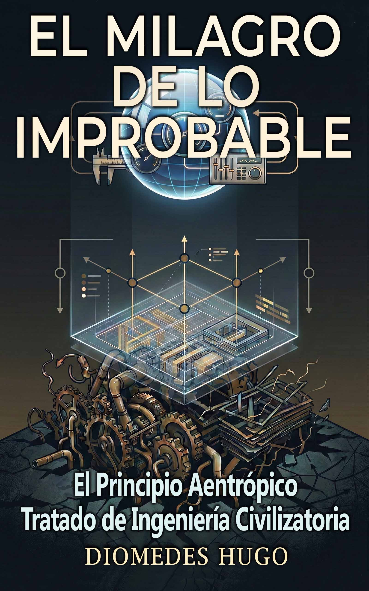

AENTROPÍA
La Doctrina Aentrópica

Dinámica del Sistema:
"Existir no implica durar; durar exige ingeniería."
01.El Principio Aentrópico
¿Y si la política tradicional no basta para resolver un problema de Termodinámica Social?
Una civilización persiste en la medida en que es capaz de invertir energía para sostener su orden frente a la complejidad que la rodea.
Su permanencia no es accidental. Es una consecuencia directa de su capacidad para mantener su coherencia frente a las perturbaciones.
Donde esa capacidad falla… el colapso no es inesperado.
Es inevitable.
02.El Modelo
Matriz de Variables Fundamentales
04.El Marco Aentrópico
Un sistema teórico que modela la dinámica de los sistemas sociales mediante principios termodinámicos.

El Principio Aentrópico
Tratado de Ingeniería Civilizatoria
Este tratado explora el propósito de la humanidad desde una perspectiva física y propone un modelo para entender la sociedad como un sistema de gestión de energía, donde su supervivencia depende de cómo transforma y sostiene su estructura.
Validación Académica
Modelado matemático avanzado y evidencia empírica. El paper técnico destinado a someter la Doctrina Aentrópica al rigor de la revisión por pares.